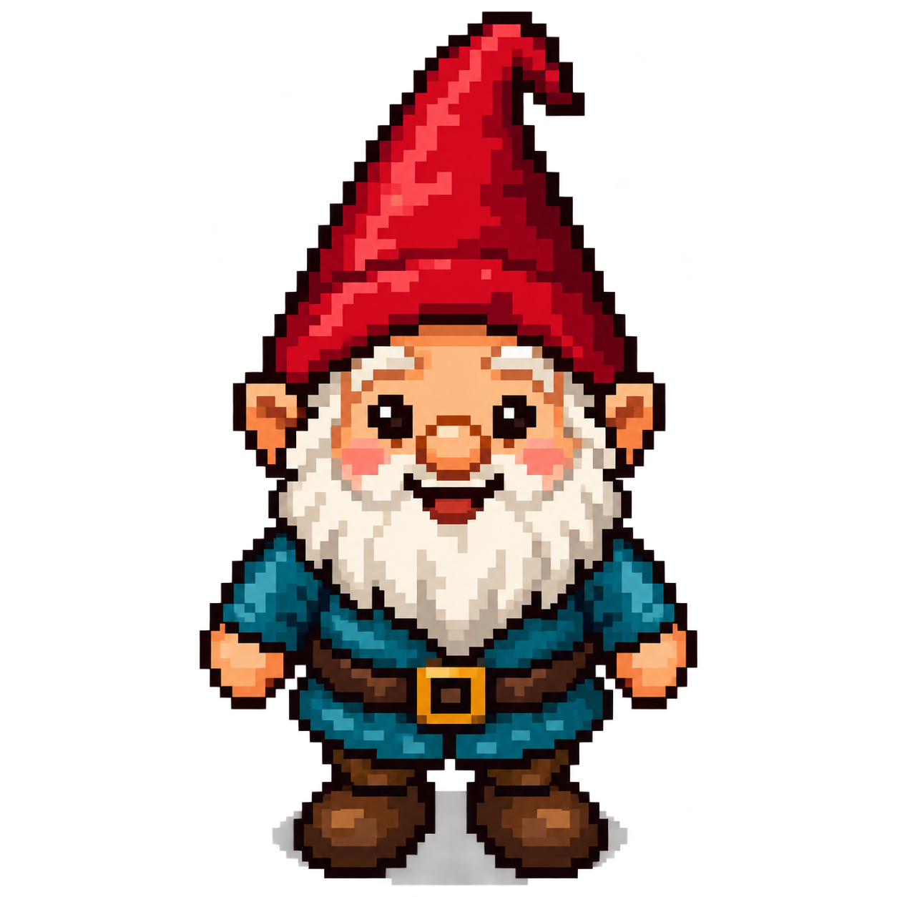

SMALL GNOME. BIG ADVENTURE.
Follow the winding paths. Fill your pack.Every locked door is a puzzle waiting to be solved.

THE EXPLORER’S MAP
North is up. X increases → Y increases ↑
WELCOME, WAYFARER
What should we call yours? A nickname is perfect.
Your name and progress stay in this tab. Nothing is submitted or saved.
A DISCOVERY ON THE TRAIL
GOOD THINGS COME PREPARED
Wear clothing and wield weapons here. Keys and bombs are selected during an interaction.
THE GNOME’S FIELD GUIDE
Move one square with the arrow keys, numpad 8 / 2 / 4 / 6, or the on-screen arrows. Hold no keys: each fresh press takes one step.
Try walking toward an object to discover its choices. A successful puzzle uses one matching key or bomb. Failed attempts keep your items unless the puzzle explicitly takes an item as a failure cost. Clothing and weapons are reusable.
Open your pack to wear boots or wield a sword. Carrying them is only half the story. Walls stay walls—but a tree that looks just like its neighbors might hide a surprise.
The map starts at (1,1) in the bottom-left. Up increases Y; right increases X. Your field of view can change, but each tile stays 32 pixels square.
Progress lasts until you reload or start a new adventure. No accounts, tracking, or downloads are needed to play.